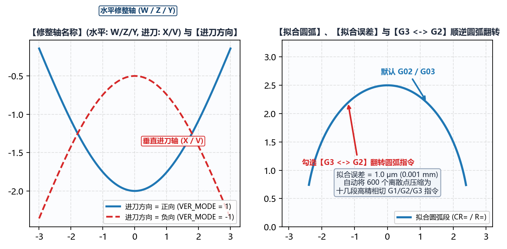

3.3 程序信息：程序模式（模式-0 ~ 模式-100）与修整轴配置
切换至 高级参数 -> 程序信息 子标签页，工程人员可在此定义输出数控宏程序的头部注释信息、选择适配目标磨床数控系统的 程序模式，并配置修整水平轴、进刀轴名称及进刀方向。
一、程序头信息 与 程序头加载齿形信息
程序头信息（多行文本框）： 允许用户输入自定义的工艺备注（如零件图号、批次号、砂轮粒度型号、操作员提示等）。生成代码时，软件会自动在每行文字前添加对应数控系统的注释符（西门子添加;，发那科添加(...)，新代添加//）并写入宏程序最顶部。程序头加载齿形信息（否/是）：- 当设为
是（强烈推荐）时，软件会自动将本次计算的全部核心输入参数（包括工件类型、螺纹旋向、工件中径、导程、砂轮安装角、左右滚轮圆弧半径、齿根倒圆半径、拟合误差，以及伴随文件*-info.txt中的齿形建模参数）自动写入宏程序头部注释区； - 这样现场调机人员在数控系统屏幕上打开程序时，一眼即可核对当前修整程序对应的工件规格与滚轮半径，彻底杜绝用错程序撞机。
- 当设为
二、13 种 程序模式（模式-0 ~ 模式-100）全景对照表
IGD 内置了 13 种标准化与自定义程序输出模式，全面覆盖 Siemens（西门子 840D sl / 828D / ONE）、Fanuc（发那科 0i / 31i） 与 Syntec（新代） 数控磨床，并提供专用于逆向工程的纯 DXF 导出模式（模式-99）：
程序模式 |
数控系统与文件后缀 | 默认 当前砂轮直径变量 |
默认 修整轴名称 (水平: / 进刀:) |
默认 进刀方向 |
宏程序结构特征与适用机型说明 |
|---|---|---|---|---|---|
模式-0 |
Siemens (.SPF/.CPF) |
DRESSER[24] |
W / U (可编辑) |
负向 (可编辑) |
西门子标准通用模板：含 当前修整侧变量(0右/1左)=DRESSER[44]、读取程序信息变量(1读取)=DRESSER[40]，支持在线读取最大/最小直径与滚轮参数，广泛用于内/外螺纹磨床。 |
模式-1 |
Siemens (.SPF/.CPF) |
_OVR[167] |
Y / X (固定) |
负向 (固定) |
西门子带完整换刀/修整循环头尾模板：默认勾选 G3 ⇆ G2，自动生成 G500/T4D1/M91/DIAMOF...DRESS_END 机床动作指令，常用于螺杆转子与外圆成形磨床。 |
模式-2 |
Siemens (.SPF/.CPF) |
DRESSER[1] |
W / X (固定) |
负向 (固定) |
西门子专用模板 A：读取程序信息变量(1读取) 默认为 DRESSER[43]，水平轴 W、进刀轴 X。 |
模式-3 |
Siemens (.SPF/.CPF) |
REPAIR[8] |
Y / X (固定) |
负向 (固定) |
西门子专用模板 B：使用 REPAIR[8] 作为实时砂轮直径宏变量，水平轴 Y、进刀轴 X。 |
模式-4 |
Siemens (.SPF/.CPF) |
R9 |
W / V (固定) |
负向 (固定) |
西门子 R 参数多道修整循环模板：内建 DIAMOF / STRIM / RECALVAR / TRIMEND 循环标签与修整次数计数器，水平轴 W、进刀轴 V。 |
模式-5 |
Fanuc (O2010) |
#603 (#550=#603) |
Z / X (固定) |
正向 (固定) |
发那科标准宏程序模板 A：输出无后缀 O2010 宏程序，通过 #550=#603 读取当前砂轮直径并执行 IF[#550 GE ...] GOTO... 阶梯跳转。 |
模式-6 |
新代 Syntec (O2010.txt) |
#340 (#350 := #340) |
Y / X (固定) |
负向 (固定) |
新代（Syntec）专用宏程序模板：首行带 %@MACRO 声明，采用 // 注释符与 := 赋值语法（#350 := #340），水平轴 Y、进刀轴 X。 |
模式-7 |
Fanuc (O2010) |
#603 (#550=#603) |
Z / X (固定) |
正向 (固定) |
发那科标准宏程序模板 B：带 #122=100 起始行号步进与 N100 结尾段，适配特定发那科内螺纹磨床宏调用规范。 |
模式-8 |
Siemens (.SPF/.CPF) |
R40 |
W / V (固定) |
负向 (固定) |
西门子双滚轮参数化定位模板：支持通过 R54/R55/R52/R53 动态偏移左右修整轮基准坐标，水平轴 W、进刀轴 V。 |
模式-9 |
Fanuc (O2010) |
#603 |
Z / X (固定) |
正向 (固定) |
发那科精简宏程序模板：直接判断 #603 直径范围并执行左右分侧修整插补。 |
模式-98 |
Fanuc 自定义 (O2010) |
#603 (可编辑) |
Z / X (可编辑) |
正向 (可编辑) |
发那科全开放自定义模式：开放 当前砂轮直径变量、水平:、进刀: 轴名及 进刀方向 自由编辑，适配任意改装或非标 Fanuc 磨床。 |
模式-99 |
仅输出 DXF (.dxf) |
自动隐藏 | 自动隐藏 | 自动隐藏 | 单砂轮直径纯 DXF 导出模式：不生成数控 G 代码，仅针对当前给定的单一最大砂轮直径（或最小杆偏移）输出高精密 *-wheel.dxf（理论砂轮廓形）与 *-dresser.dxf（滚轮中心轨迹），供第三方 CAM 或 CAD 检图使用。 |
模式-100 |
Siemens 自定义 (.SPF/.CPF) |
DRESSER[24] (可编辑) |
W / U (可编辑) |
负向 (可编辑) |
西门子全开放自定义模式：开放 当前砂轮直径变量、水平:、进刀: 轴名及 进刀方向 自由修改，适配任意非标西门子系统机床。 |
三、修整轴名称、进刀方向 与圆弧插补指令映射

在 模式-0、模式-98 与 模式-100 下，用户可根据机床实际机械轴定义修改：
修整轴名称：水平:：金刚石滚轮沿砂轮宽度方向（平行于砂轮主轴轴线）移动的数控轴名称（常见为W、Z或Y）；进刀:：金刚石滚轮沿砂轮径向（切入/退出砂轮表面）移动的数控轴名称（常见为U、V或X）。
进刀方向（负向/正向）：负向：修整器向砂轮中心切入时，进刀轴坐标值减小（绝大多数卧式内/外圆磨床后置修整器的标准方向，齿根处进刀坐标为负值，齿顶处趋近于 0）；正向：修整器向砂轮切入时，进刀轴坐标值增大（常见于前置修整器或特定立式/发那科磨床，齿根处进刀坐标为正值）。- 重要安全核查：更改
进刀方向不仅会使所有生成的进刀轴坐标值以及圆弧圆心增量（I/J/K或CR=）符号反转，还会联动影响圆弧顺逆时针方向。首次在新机床上试切前，请务必在机床空运行模拟画面（或本软件右下角模拟计算视图）中确认刀路凸凹朝向正确！